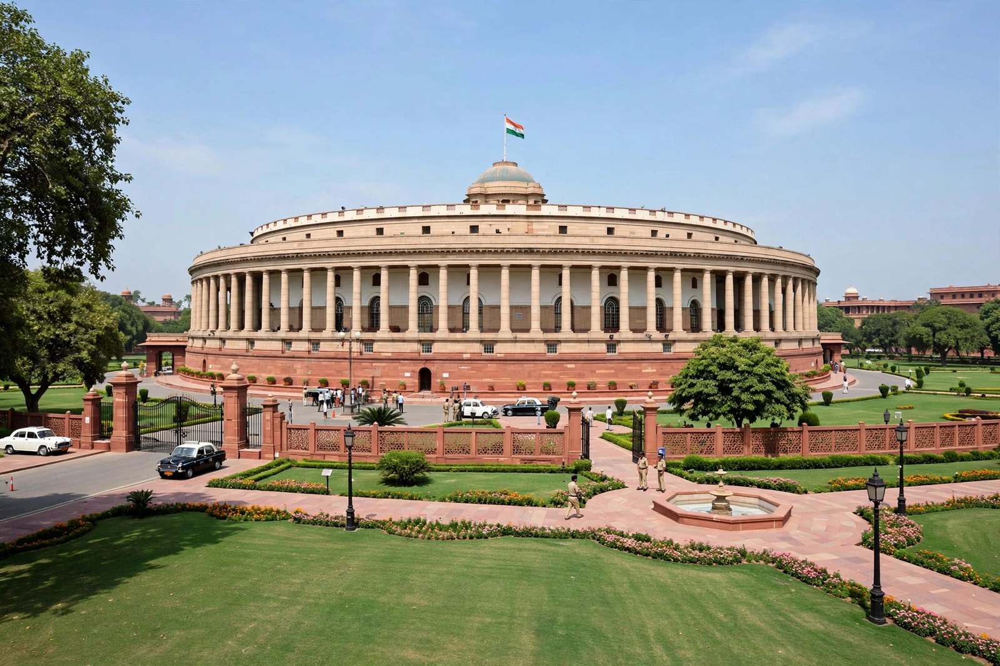

From Wikipedia, the free encyclopedia
| Style | The Honourable |
|---|---|
| Residence | Vice President's Enclave, New Delhi |
| Appointer | Electoral College of India |
| Term length | Five years, renewable |
| Constituting instrument | Constitution of India (Article 63) |
| Formation | 13 May 1952 |
| First holder | Sarvepalli Radhakrishnan |
The Vice President of India is the deputy to the head of state of the Republic of India, i.e. the President of India. The office ranks second in the order of precedence and is created under Article 63 of the Constitution of India. The Vice President also serves ex officio as the Chairman of the Rajya Sabha, the upper house of Parliament.
The Vice President is indirectly elected by an electoral college consisting of members of both houses of Parliament — including nominated members, unlike the presidential election — by proportional representation using the single transferable vote, with voting by secret ballot. The term of office is five years, and the Vice President may be re-elected. To be eligible, a candidate must be a citizen of India, at least 35 years of age, and qualified for election as a member of the Rajya Sabha.

The Vice President's principal routine function is presiding over the Rajya Sabha, regulating debates and conduct in the house. Constitutionally, the Vice President discharges the functions of the President, or acts as President, when the office falls vacant by death, resignation or removal, or when the President is unable to act — until a new President is elected or the President resumes office. While so acting, the Vice President does not perform the duties of Chairman of the Rajya Sabha.
| No. | Name | Term |
|---|---|---|
| 1 | Sarvepalli Radhakrishnan | 1952–1962 |
| 2 | Zakir Husain | 1962–1967 |
| 3 | V. V. Giri | 1967–1969 |
| 4 | Gopal Swarup Pathak | 1969–1974 |
| 5 | B. D. Jatti | 1974–1979 |
| 6 | Mohammad Hidayatullah | 1979–1984 |
| 7 | R. Venkataraman | 1984–1987 |
| 8 | Shankar Dayal Sharma | 1987–1992 |
| 9 | K. R. Narayanan | 1992–1997 |
| 10 | Krishan Kant | 1997–2002 |
| 11 | Bhairon Singh Shekhawat | 2002–2007 |
| 12 | Mohammad Hamid Ansari | 2007–2017 |
| 13 | Venkaiah Naidu | 2017–2022 |
| 14 | Jagdeep Dhankhar | 2022–2025 |
Several vice presidents — including Radhakrishnan, Zakir Husain, V. V. Giri, R. Venkataraman, Shankar Dayal Sharma and K. R. Narayanan — have gone on to become President of India.
The Vice President may be removed by a resolution of the Rajya Sabha passed by an absolute majority and agreed to by the Lok Sabha, after at least fourteen days' notice. The office may also fall vacant by resignation, death, or expiry of the term.
Categories: Vice presidents of India · Government of India · Rajya Sabha